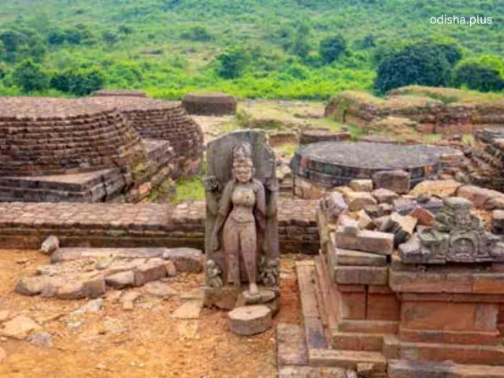

Tourism Potential of the Diamond Triangle in Odisha
Read in book
Now a days Tourism in Odisha is primarily confined to the Golden Triangle of Puri, Konark and Bhubaneswar and the adjacent Chilka lake. We are yet to utilise the tourism potential of other places having significant importance . One such is the "Diamond Triangle" of Odisha, comprising the ancient Buddhist sites of Ratnagiri, Udayagiri, and Lalitgiri in Jajpur district which holds immense tourism potential, primarily centred around its rich Buddhist heritage. This region, often referred to as the "Buddhist Diamond," is a testament to the flourishing tradition of Buddhism in India, particularly between the 5th and 13th century AD brought to notice during post independence period by the archeologists. Noted archaeologist Dr Debala Mitra conducted extensive excavation of these sites during 1958- 1961 and reported his findings which attracted national attention. The significance of the place may be summarised as follows:
1. Rich Buddhist Heritage:
a) Archaeological Marvels: The three sites boast extensive ruins of monasteries (Mahaviharas), stupas, chaityas (prayer halls), and beautifully carved sculptures of Buddha and other Buddhist deities like Tara, Manjushri, Avalokiteswara, etc. These structures showcase sophisticated ancient Indian art and architecture.
b) Historical Significance: These sites predate even renowned Buddhist Centres in India like Nalanda and Taxila. There were thriving monastic universities and centres of learning, particularly for the Mahayana and Vajrayana sects of Buddhism. Lalitgiri is believed to be the oldest and holiest, with relic caskets that some believe contain the remains of Buddha himself. Some historians hold the view that it was the place of origin of Vajrayana sect of Buddhism and Buddhism traveled from here to Srilanka and other places. Interestingly, the famous Chinese historians Huen Tsang visited this place and recorded the rich cultural heritage of the place. He mentioned about Pushu Po Kili Mahavihar , a thriving centre of Buddhism here and historians identify it with Ratnagiri.
c) Pilgrimage Destination: For Buddhists worldwide, especially those interested in the origins and spread of Buddhism in India , the Diamond Triangle offers a significant pilgrimage experience, connecting them to a crucial chapter of Buddhist history. Efforts are being made to establish a "Buddhist Circuit" in Odisha, integrating these sites with others like Nalanda and Bodhgaya. Alone from SriLanka about seven lakh Buddhist tourists visit India annually and mostly they visit Nalanda and Bodhgaya. If one third of these tourists can be attracted towards the Diamond Triangle then the footfall of foreign tourists to Odisha will be doubled in a year. Interestingly Srilanka shares an intrinsic relationship with Odisha since the Buddhist relic preserved as a national heritage in the city of Kandy was donated by Prince of Kalinga to their King. It’s boldly mentioned in front of the monument. Of course very few of Srilankans know that Kalinga is the present day Odisha. We have to revive the old relationship by strategic cooperation.
2. Cultural and Educational Tourism:
a) Scholarly Interest: The archaeological findings continue to attract scholars, researchers, and historians interested in ancient Indian history, Buddhist studies, and art history.
b) Cultural Exchange: Initiatives like the Guru Padmasambhava Ceremony held in January 2025 by some Buddhist scholars from Japan are bringing together monks, nuns, and devotees, fostering cultural exchange and solidifying the Diamond Triangle's position as a global Buddhist tourism destination. We have to follow up with these organisers to attract international Buddhist tourists to this place .
c ) Museums: Lalitgiri houses a beautiful museum established by Government of India displaying artefacts recovered during excavations, providing visitors with deeper insights into the history and significance of the sites. From inside a stupa here the tooth relic of Buddha has been recovered.The same should be put to display here. Ratnagiri also has a site museum exhibiting many Buddhist idols and miniatures recovered from the ruins. They are having rich historical and archeological value for the researchers.
3. Growing Recognition and Accessibility:
The Diamond Triangle is relatively accessible, located about 75-80 km from Bhubaneswar and 50 km from Cuttack. This makes it feasible for day trips or short tours from these cities. The sites are well-connected by road, primarily via the Bhubaneswar-Kolkata National Highway (NH-16) from Chandikhol.
Data suggests a significant increase in visitors to Ratnagiri and Lalitgiri in recent years, indicating growing interest by the tourists from other parts of the country and abroad.
4. Potential for Sustainable and Eco-Tourism:
These sites are often nestled in serene landscapes, offering a peaceful ambiance conducive to meditation and mindful travel.
The surrounding areas also offer glimpses into Odisha's biodiversity, with potential for developing eco-tourism activities that complement the cultural experience.
There's also potential for developing eco-friendly home-stays to provide immersive travel experiences and directly benefit local communities, promoting sustainable tourism practices.
Present Challenges :
Despite its immense potential, the Diamond Triangle faces some challenges that need to be addressed for full realisation of its tourism potential. First of all we have to develop basic infrastructures in and around the area.
Notably there is a lack of proper tourist-friendly amenities, including hotels, home-stays, and good eateries directly at the sites. Tourists often need to carry their own food and water since it is not available locally. Only one hotel worth the name is in Ratnagiri. More such hotels, coffee shops, restaurants need to come up to cater to the needs of the tourists. The roads connecting to the sites need to be improved as well.
The sites, despite their significance, are still less known to outside world compared to other prominent Buddhist sites in India. More concerted efforts are needed for their promotion on both national and international levels. Thankfully, the local MP Dr Rabi Narayan Behera has taken up with the Government of India recently to establish a Buddhist University here like one in Nalanda and improve tourist infrastructure in the area. The State Government should come forward to develop it as a tourist destination on priority basis. Enhancing the visitor experience through skilled guides, informative signage, and proper interpretation centres can significantly boost the appeal of these historical sites for the visitors. While these sites are under ASI, continuous efforts are required for the ongoing preservation and maintenance of the delicate archaeological remains which fall prey to continuous erosion and destruction.
By addressing these challenges and leveraging its unique heritage, the Diamond Triangle has the potential to become a globally recognised and thriving hub for Buddhist and cultural tourism, contributing significantly to the state's economy and promoting cultural exchanges across the globe. It has also huge scope for employment opportunities for the local community in future.